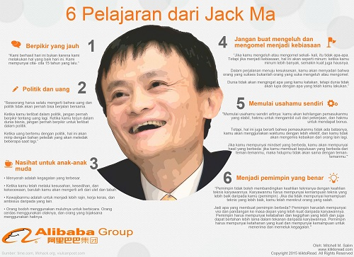

Blog ini dibuat dengan tujuan untuk membagikan pikiran, pandangan dan tulisan serta berita-berita dalam bidang teknologi yang ingin penulis sampaikan.
SWOT adalah metode perencanaan strategis yang digunakan untuk mengevaluasi kekuatan (strengths), kelemahan (weaknesses), peluang (opportunities), dan ancaman (threats) dalam suatu proyek atau suatu spekulasi bisnis. Keempat faktor itulah yang membentuk akronim SWOT (strengths, weaknesses, opportunities, dan threats).
Pada kesempatan, saya akan memberikan pemikiran saya dalam bentuk SWOT Analisis untuk menganalisis suatu era atau zaman yang telah hadir kepada kita yaitu zaman Revolusi Industri 4.0.
Jack Ma sebenarnya bernama asli Ma Yun. Ia dilahirkan pada tanggal 15 Oktober 1964, di Hangzhou, yang terletak di wilayah tenggara dari China. Ma punya abang laki-laki dan seorang adik perempuan. Dia dengan saudara-saudaranya tumbuh pada saat komunis di China sedang sangat terisolasi dari dunia barat dan kala itu keluarganya tidak punya banyak uang.
Di tahun 1972, Presiden Nixon sempat mengunjungi Hangzhou. Setelah itu, kampung halaman Ma menjadi kiblat dari para turis. Sebagai seorang remaja kreatif yang berjiwa bisnis, Ma menjalankan harinya dengan bangun pagi-pagi untuk mengunjungi hotel utama yang ada di kota itu. Kemudian dia menawarkan guide tour buat turis-turis dengan upah pelajaran bahasa Inggris. Nama panggilan “Jack” akhirnya melekat padanya, hasil pemberian dari seorang turis yang akhirnya berteman akrab dengannya.
Tak seperti anak-anak orang kaya, tanpa uang atau koneksi, satu-satunya cara Ma supaya bisa maju adalah lewat pendidikan. Setelah SMA, dia mendaftar buat kuliah tetapi dia gagal ujian masuk sampai dua kali. Setelah banyak-banyak belajar, dia akhirnya lulus pada percobaan yang ketiga, kemudian melanjutkan studinya di Hangzhou Teachers Institute. Dia bisa lulus pada tahun 1988 dan mulai coba-coba melamar pekerjaan sebanyak mungkin.
Ia ternyata harus menerima lebih dari selusin penolakan, termasuk dari restoran KFC setempat. Akhirnya Ma dipekerjakan sebagai guru bahasa Inggris. Ma memanglah pengajar yang natural, ia disukai oleh murid-muridnya dan ia sangat mencintai pekerjaannya walaupun gajinya tergolong kecil. Ma cuma menghasilkan 12 $ sebulan di suatu universitas lokal, tempat ia mengajar.
Ma sebenarnya tidak punya pengalaman dengan komputer atau bahkan coding, tetapi ia sangat tertarik dengan dunia internet ketika ia bisa menggunakannya untuk pertama kalinya selama perjalanan ke Amerika di tahun 1995. Ia baru saja memulai bisnis penerjemahan dan waktu itu sedang melakukan perjalanan untuk membantu suatu perusahaan China pulih. Pencarian online pertama Ma adalah “bir,” tetapi dia sangat terkejut menemukan bahwa tidak ada bir Cina yang muncul dalam hasil pencarian di internet. Saat itulah ia memutuskan untuk mendirikan perusahaan internet buat negaranya China.
Tak lama setelahnya, layanan internet ini mulai menarik perhatian banyak pengguna dari seluruh dunia. Pada bulan Oktober di tahun 1999, perusahaan Ma berhasil kumpulkan 5 $ juta dari Goldman Sachs dan juga sebesar 20 $ juta dari SoftBank. SoftBank ini merupakan perusahaan telekomunikasi Jepang yang suka berinvestasi bagi perusahaan teknologi.
Di tahun 2005, Yahoo pun ikut menginvestasikan 1 $ miliar buat Alibaba untuk ditukarkan dengan sekitar 40% saham perusahaan. Jumlah ini sangat besar untuk Alibaba yang pada saat itu lagi mencoba kalahkan bisnis eBay di China. Akhirnya keputusan Yahoo ini menjadi kemenangan besar bagi Yahoo juga karena berhasil hasilkan 10 $ miliar untuk IPO Alibaba.
Alibaba akhirnya go public pada tanggal 19 September 2014. “Hari ini yang kami dapatkan bukan uang. Yang kami dapatkan adalah kepercayaan dari orang-orang,” Ujar Ma kala itu kepada jurnalis CNBC.
IPO senilai 150 $ miliar ini adalah penawaran terbesar buat perusahaan yang terdaftar di Amerika sepanjang sejarah Bursa Efek di New York. Itulah juga menjadikan Ma orang terkaya di negara asalnya China, dengan estimasi value 25 $ miliar.
I'm not a Tech Guy. I'm looking at the technology with the eyes of my customers normal people's eye.
Alasan saya menjadikan Ma sebagai panutan dalam bidang IT adalah walaupun dia bukan seorang ahli IT, tetapi dia berhasil menjadikan bisnis nya dalam bidang IT menjadi sangat besar. Selain itu yang saya suka daari seorang Jack Ma adalah dia merupakan orang yang tidak mudah menyerah, terbukti dari kegagalannya pada saat mendaftar menjadi karyawan KFC dan dia merupakan satu-satunya yang ditolak di KFC tersebut. Setelah ia gagal menjadi karyawan di KFC dia pun akhirnya bekerja sebagai pengajar Bahasa Inggris di sebuah universitas lokal. Walaupun ia hanya mendapatkan gaji sebesar $12 per bulan, tetapi ia sangat mencintai pekerjaannya tersebut, ini lah salah satu dari seorang Jack Ma yang sangat saya sukai, yaitu apapun pekerjaannya kita harus mencintai pekerjaan tersebut walau hanya diupah dengan harga yang murah.
Selain itu hal yang saya suka dari seorang Jack Ma adalah dia berani untuk membangun perusahaan e-commerce nya sendiri. pada tahun 1999, ia memutuskan untuk mendirikan sebuah perusahaan e-commerce nya sendiri. Ia lalu membagikan visi kepada 18 orang dari apartement nya selama 2 jam. Semua orang diruangan itu mengumpulkan uang sejumlah $60.000. Ma memilih nama Alibaba untuk perusahaan barunya tersebut, yang sekarang kita kenal sebagai perusahaan raksasa yang bernilai sekitar $2.18 triliun.
Lalu, apakah dengan menjadikan Jack Ma saya sudah memiliki kepribadian yang sama dengannya ?? Menurut saya saya belum sepenuhnya memiliki kepribadian seperti panutan saya yaitu Jack Ma. Karena, terkadang saya pernah merasa kecewa dan ingin menyerah karena gagal menggapai Universitas dan Sekolah Tinggi yang sangat saya idamkan. Sedangkan Jack Ma ia tidak pernah merasa kecewa, sedih dan merasa ingin menyerah karena kegagalannya dalam ujian masuk universitas sampai dua kali. Selain itu saya juga merasa masih kurang berani untuk mengambil keputusan yang beresiko besar walaupun mungkin sanagt berpengaruh untuk kehidupan saya. Sedangkan Jack Ma, ia sangat berani untuk mengambil keputusan untuk mendirikan sebuah perusahaan e-commercenya sendiri walaupun sebelumnya telah mendapatkan tawaran dari pemerintah. Dan ia juga mau berani untuk membuat sebuah website berbahasa China karena ia menemukan bahwa kata yang pertama ia cari di internet yaitu "beer" tidak ada satupun hasil dalam bahasa China dan ia meminjam uang sebanyak $2000 untuk membangun perusahaan berbasis internet di China, China Pages.
Tetapi ada satu kepribadian yang menurut saya, saya sudah mulai mempunyai kepribadian tersebut. Dan kepribadian tersebut adalah menjadi pemimpin yang benar. Walaupun saya hanya memimpin sebuha kelompok kecil dalam pelajaran menurut saya, saya dapat mulai menerapkan konsep pemimpin yang dimiliki oleh Jack Ma, yaitu pemimpin tidak boleh membandingkan keahlian (kepintaran) teknisinya (dalam hal ini anggota). Anggota harus mempunyai kemampuan yang lebih baik dari sebelumnya bahkan melampaui kita sebagai pemimpin.
Jadi, untuk menjadi seorang yang sukses dalam bidang IT tidak hanya mereka-mereka yang mengerti tentang segalanya mengenai IT. Kita hanya perlu mampu melihat peluang pasar dan berani untuk melakukannya dan menggabungkan dengan teknologi serta berjiwa kepemimpinan yang benar dan tidak gampang menyerah, maka kita akan berhasil dalam era internet seperti sekarang ini.
When you are Small, you have to be very Focused and rely on your Brain, not your Strength.